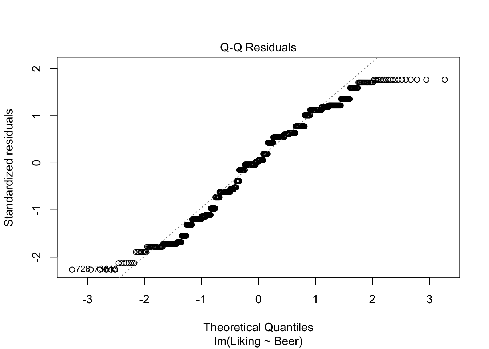

Chapter 23 Structured Equation Modelling
23.1 Example - Theory of Planned Behaviour
2+2## [1] 423.1.1 PLSDA (CATA??)on CATA and liking??
[This needs more love. Skal vente til 2023! hvordan får vi det ud af bogen så?]
library(caret)## Loading required package: lattice##
## Attaching package: 'caret'## The following object is masked from 'package:survival':
##
## cluster## The following object is masked from 'package:purrr':
##
## liftmdl <- plsda(data.frame(beercata[,3:29]),factor(beercata$Beer),ncomp = 3)
scores <- mdl$scores %>%
unclass %>%
as.data.frame %>%
cbind(beercata)
loadings <- mdl$loadings %>%
unclass %>%
as.data.frame %>%
rownames_to_column('attrib') %>%
mutate(attrib2 = substr(attrib,3,50)) # lets remove the S_
g1 <- ggplot(data = loadings, aes(`Comp 1`, `Comp 2`, label = attrib2)) +
# geom_point() +
geom_text()
g2 <- ggplot(data = scores, aes(`Comp 1`, `Comp 2`, color = Beer)) +
# geom_point() +
stat_ellipse(level = 0.5)
library(patchwork)##
## Attaching package: 'patchwork'## The following object is masked from 'package:MASS':
##
## areag1 + g2
# do multiple splithalfs
# INPUT: judge id. CATA, class, ncomp
X <- beercata[,3:29]
clss <- factor(beercata$Beer)
judge <- beercata$Consumer.ID
k <- 3
A <- 30
mdl0 <- plsda(X,clss,ncomp = k)
lds0 <- mdl0$loadings %>%
unclass %>%
as.data.frame %>%
rownames_to_column('attrib') %>%
gather(cmp,val0,-attrib)
unjudge <- unique(judge)
nindiv <- length(unjudge)
LOADS <- data.frame()
for (i in 1:A){
ic <- judge %in% sample(unjudge)[1:round(nindiv/2)]
mdlSH <- plsda(X[ic,],clss[ic],ncomp = k)
df_flip <- data.frame(sng = sign(diag(t(mdl0$loadings) %*% mdlSH$loadings))) %>%
rownames_to_column('cmp')
lds <- mdlSH$loadings %>%
unclass %>%
as.data.frame %>%
rownames_to_column('attrib') %>%
gather(cmp,val,-attrib) %>%
left_join(df_flip, by = 'cmp') %>%
mutate(SHiter = i,
val = val*sng)
LOADS <- bind_rows(LOADS,lds)
}
fc <- (1 / A)*((A - 1)/A)
sdloads <- LOADS %>%
left_join(lds0, by = c('attrib','cmp')) %>%
group_by(attrib,cmp) %>%
dplyr::summarise(sd = sum((val-val0)^2) *fc) %>%
mutate(cmp = paste('sd',cmp,sep = '')) %>%
spread(cmp,sd)## `summarise()` has grouped output by 'attrib'. You can override using the
## `.groups` argument.loadsSH <- lds0 %>%
spread(cmp,val0) %>%
left_join(sdloads, by = 'attrib')
library(ggforce)
ggplot(data = loadsSH, aes(x0 = `Comp 1`,y0 = `Comp 2`,a = `sdComp 1`,b = `sdComp 2`,angle = 0)) + geom_ellipse()